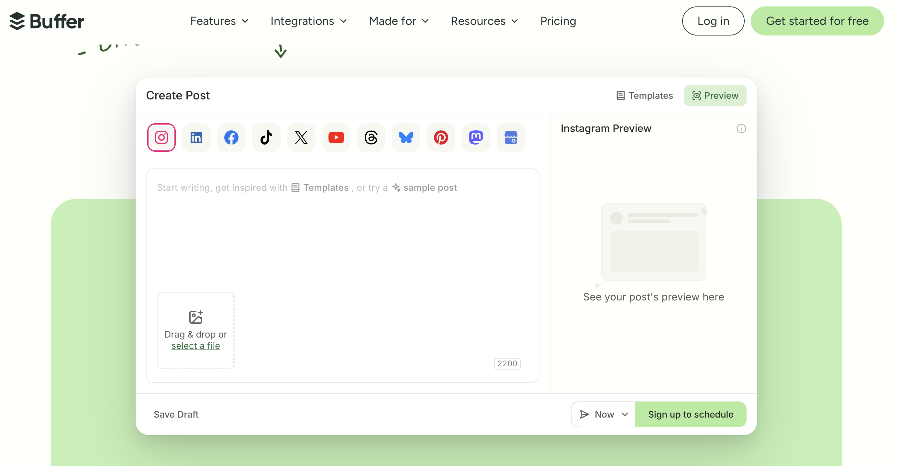

Buffer vs Planoly (2026): Which Social Scheduler Is Better?
Updated July 2026·7 min read
TL;DR
Buffer is a general-purpose scheduler priced per channel, from $6/month, with a free plan for 3 channels.
Planoly focuses on visual content calendars for Instagram, TikTok, Facebook, and Pinterest, priced per Social Set from $14/month, with DM automation Buffer lacks.
Neither tool can fix TikTok account eligibility, if you're outside the US and need Creator Rewards or Shop access, Tikomate provides a US-registered account for $25 one-time.
Buffer and Planoly are both social media scheduling tools, but they take different approaches to multi-platform management. Buffer is channel-based and general-purpose. Planoly is Social-Set-based with a stronger visual planning layer. This guide compares them for creators and teams deciding which scheduler fits their workflow.
What is the main difference between Buffer and Planoly?
Buffer connects to your channels via official APIs and charges per channel, starting free for up to 3 channels and scaling to $6-12/month per channel for unlimited scheduling. Planoly charges per "Social Set" (a bundle of connected accounts), starting at $14/month, and adds visual feed planning, a media library, and Instagram DM automation that Buffer does not offer.
Buffer: Per-channel pricing, free tier for 3 channels, official API scheduling, unified inbox.
Planoly: Per-Social-Set pricing, visual feed preview, media library, DM automation, from $14/month.
$0
Buffer's free plan covers 3 channels and 10 scheduled posts each, no equivalent free tier exists on Planoly, whose cheapest plan starts at $14/month.
Source: Buffer and Planoly published pricing, 2026

Buffer's Create Post interface, a general-purpose social scheduler.
Go Deeper: Side-by-Side Breakdown
1. Pricing Model: Per-Channel vs Per-Social-Set
Buffer's Essentials plan is $6/month per channel, so a brand running 3 channels pays $18/month total. Planoly bundles multiple channels into one "Social Set" at $14/month for its Starter tier, which can be cheaper or more expensive depending on how many channels you're actually running.
2. Planning Tools: Unified Calendar vs Visual Feed Preview
Buffer's calendar is functional and platform-agnostic. Planoly adds a visual grid preview specifically for Instagram feed planning, plus a shared media library, features that matter more to brands planning aesthetic-driven feeds than to teams simply queueing posts.
3. Extra Features: Landing Pages vs DM Automation
Buffer's Essentials plan includes a basic landing page builder. Planoly instead offers Instagram DM automation and reminder-based posting for content types TikTok's API doesn't allow auto-posting for. Neither tool, however, can change what country your TikTok account is registered to, a separate problem entirely.
Where Does Tikomate Fit In?
Buffer and Planoly both assume you already have a working, correctly-registered TikTok account and just need help scheduling posts to it. Tikomate solves a layer beneath that: it provides a US-registered TikTok account so international creators can access the Creator Rewards Program and TikTok Shop Affiliate, monetization paths a scheduling tool cannot unlock no matter how good its calendar is.
Both Buffer and Planoly assume your TikTok account is already correctly registered. Neither can unlock the Creator Rewards Program or TikTok Shop Affiliate for a creator outside the US. Tikomate provides a US-registered account for $25 one-time to solve that specific problem before scheduling matters.
"I was using Buffer and Planoly to schedule my TikTok posts but earning nothing because my account wasn't eligible for Creator Rewards. I got a US account from Tikomate and within two months I was earning from both Creator Rewards and TikTok Shop affiliate sales."
Ananya T. · TikTok Creator, India
Planoly, visual content calendar and scheduling platform for multi-platform content management.
Make Your Decision
Buffer wins if you want a free-to-start, per-channel scheduler. Planoly wins if you need visual feed planning and DM automation. But if your TikTok account is registered outside the US and locked out of Creator Rewards or Shop Affiliate, neither scheduler solves that, Tikomate does, for a one-time $25 fee with no monthly commitment.
Choose Buffer if…
You want a free plan to start scheduling across 3 channels
You want simple per-channel pricing without bundling
You need a unified inbox alongside your scheduling calendar
What is the main difference between Buffer and Planoly?
Buffer is a general-purpose social scheduler priced per channel, from $6/month with a free plan covering 3 channels. Planoly focuses on visual content calendars for Instagram, TikTok, Facebook, and Pinterest, priced per Social Set from $14/month, with DM automation and feed visualization tools Buffer does not offer.
Which is cheaper, Buffer or Planoly?
Buffer is cheaper at entry: its Essentials plan is $6/month per channel, versus Planoly's $14/month Starter plan for one Social Set. Buffer also has a free plan for up to 3 channels, which Planoly's tiers do not match.
Does either Buffer or Planoly help with US TikTok monetization?
No. Both are scheduling and content-planning tools that assume your TikTok account is already correctly set up. Neither can register or change an account's country eligibility for the Creator Rewards Program or TikTok Shop Affiliate. Tikomate solves that specific problem, providing a US-registered TikTok account for a one-time $25 fee.
Can I use Tikomate alongside Buffer or Planoly?
Yes, and this is the recommended workflow. Get a US-registered TikTok account and warm it up with Tikomate first, then connect it to Buffer or Planoly for ongoing content scheduling once the account is verified and active.
Unlock US TikTok income from anywhere in the world.
Tikomate provides a pre-verified US TikTok account with immediate Creator Rewards and TikTok Shop access. $25 one-time.